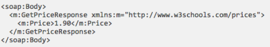

Message and flask
SOAP Envelopes
- SOAP envelopes must be present, and act as “wrappers” for soap messages
- An Envelope element that identifies the XML document as a SOAP message
- Contents include (optional) headers and the message body

- Figure Credit: https://www.w3schools.com/xml/xml_soap.asp
SOAP Headers
- SOAP Headers provide optional, application-specific information (e.g., special security information)
- soap:mustUnderstand, indicates whether the receiver must process the header and understand it — e.g., if this is for security, you would want to make sure this is handled correctly
- soap:actor, allows different headers to be processed by different receivers along a multi-receiver route
- soap:encodingStyle, specifies encoding for this element and all child elements (e.g., using standard SOAP encoding)
SOAP Bodies
- The bodies contain the actual message being transmitted
- A Body element that contains call and response information
- Elements come from a service-specific namespace, based on what the service expects

- Figure Credit: https://www.w3schools.com/xml/xml_soap.asp
SOAP Faults
- SOAP Faults containing errors and status information
- Standard child tags:
- aultcode: a defined code identifying the error
- faultstring: a human-readable message describing the error
- faultactor: the actor that triggered the fault
- detail: application-specific info on the error
| Index | Prev | Next |